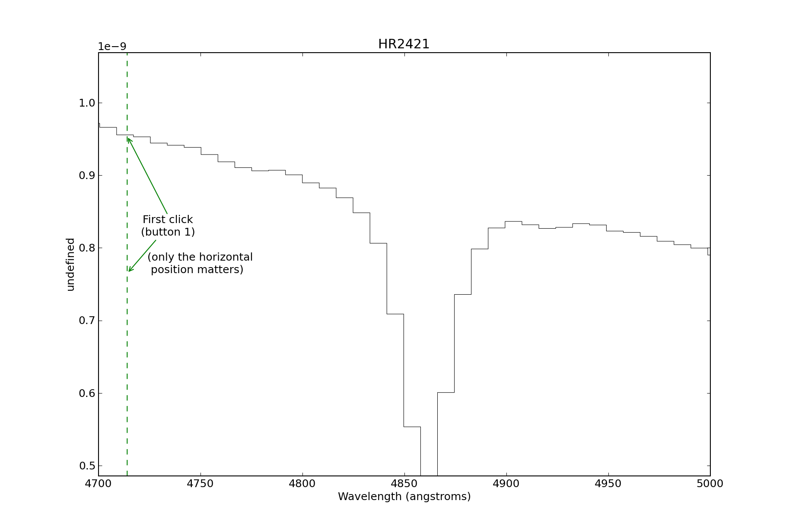
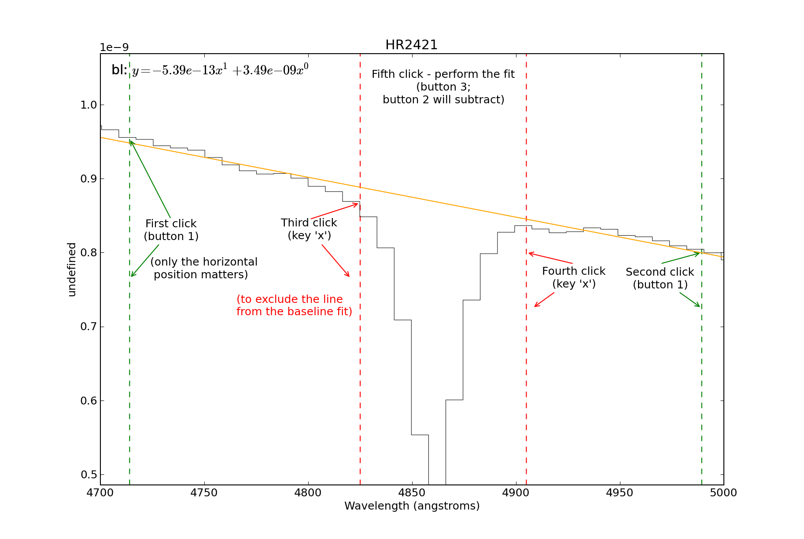
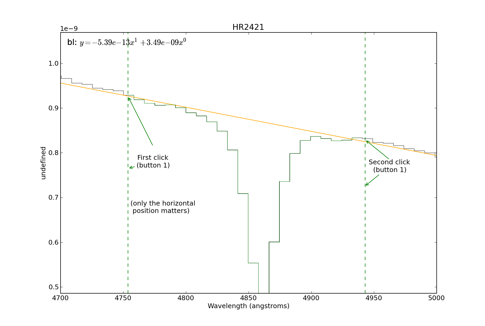
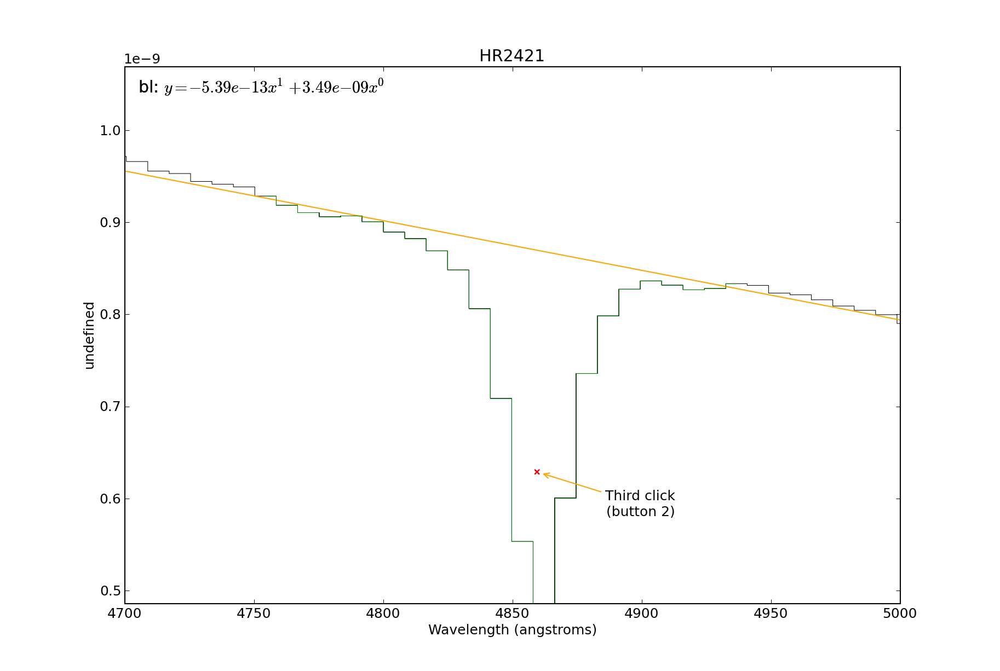
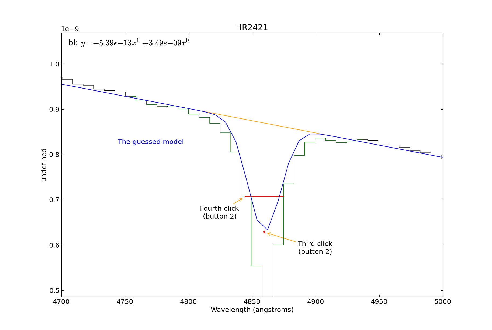

A guide to interactive fitting¶
A step-by-step example of how to use the interactive fitter.
In short, we will do the following:
# Load the spectrum
sp = pyspeckit.Spectrum('hr2421.fit')
# Plot a particular spectral line
sp.plotter(xmin=4700,xmax=5000)
# Need to fit the continuum first
sp.baseline(interactive=True, subtract=False)
# (much work takes place interactively at this stage)
# Start up an interactive line-fitting session
sp.specfit(interactive=True)




This is where you start the line-fitter:
# Start up an interactive line-fitting session
sp.specfit(interactive=True)





